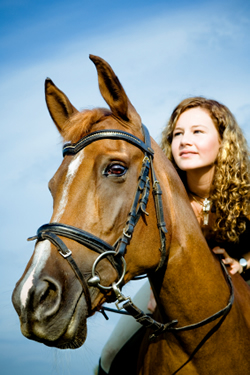

Tributes: Rent A Pet
Read what customers are saying about their experiences with Rent A Pet.
Bessie Anderson

Living in a retirement community without pets, I never thought I could enjoy the companionship of a dog again. Rent A Pet made that possible. I now walk Sophie, a lovable basset hound, every Saturday. It gives me something to look forward to each week.
Jason Hutchingson

As a college student, I couldn’t own a dog, but Rent A Pet gave me the chance. I bonded with Kamaikaze, a German Shepherd who loves running and Frisbee. He even helped me meet my fiancée. This service has been life-changing.
Michael Pinette

My travel schedule makes owning a pet difficult, but Rent A Pet allows me to enjoy animals without the responsibility. I’ve rented everything from snakes to pigs. It adds excitement to my life without the stress.
Melinda Morrison

I’ve always loved horses but never had space to own one. Rent A Pet lets me ride regularly and even request the same horse each time. It has helped me grow my riding skills and fulfill a lifelong dream.